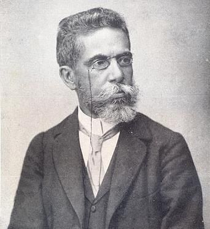

Biografia de Machado de Assis
Machado de Assis (Joaquim Maria Machado de Assis), jornalista, contista, cronista, romancista, poeta e teatrólogo, nasceu no Rio de Janeiro, em 21 de junho de 1839, e faleceu também no Rio de Janeiro, em 29 de setembro de 1908. É o fundador da cadeira nº. 23 da Academia Brasileira de Letras. Ocupou por mais de dez anos a presidência da Academia, que passou a ser chamada também de Casa de Machado de Assis.
No ano de 1856, passou a trabalhar como aprendiz de tipógrafo na Tipografia Nacional.
Em seguida, no ano de 1858, trabalhou como revisor na livraria do jornalista e escritor Paulo
Brito (1809-1861). Nesse ano, também iniciou seus estudos de francês e latim.
Também escreveu para o periódico literário O Futuro, em 1862. Cinco anos depois, em 1867,
recebeu o título de Cavaleiro da Ordem da Rosa e passou a trabalhar no Diário Oficial.
Já em 1869, Machado de Assis se casou com a portuguesa Carolina Augusta Xavier de Novais
(1835-1904).
Em 1888, recebeu o título de Oficial da Ordem da Rosa. A essa altura, já era um romancista
bastante conhecido, e, além de suas poesias, peças de teatro e contos, também escrevia crônicas,
publicadas em diversos periódicos da época. Era, portanto, um homem bem-sucedido, apesar de
que enfrentava preconceito por ser negro, gago e sofrer de epilepsia.
Ficou bastante abalado com a morte da esposa, em 1904. Assim, em 1906, escreveu o soneto “A Carolina”, em homenagem a ela. Dois anos depois, tirou licença do trabalho para cuidar da saúde, e morreu em 29 de setembro de 1908, no Rio de Janeiro. Em seus últimos momentos, teve o carinho do escritor Mário de Alencar (1872-1925), que era como um filho para o autor.